Delivering a hire van
Booking a van out to a customer
When you hand an Ooosh hire van to a customer, you book it out on your phone. You check it's the right van, read the mileage and fuel, photograph it all round, show the driver how it works, and they sign.
That's the record of how the van left us. If there's ever a question about damage or fuel, these photos and readings are what we go on.
Five things to remember
- Check the number plate before you start.
- Take all 18 photos, walking clockwise, with the whole panel in each one.
- Show the driver everything on the list, and tick it as you go.
- Hand the phone to the driver to sign.
- If the app stops you, call the office before you hand over the keys: 01273 911382.
1
Start the book-out
When you get there, open the job in the portal and tap Start delivery at the bottom.
Tap Van only. If you're delivering backline as well, tap Both: you'll do the van first, then the equipment checklist.
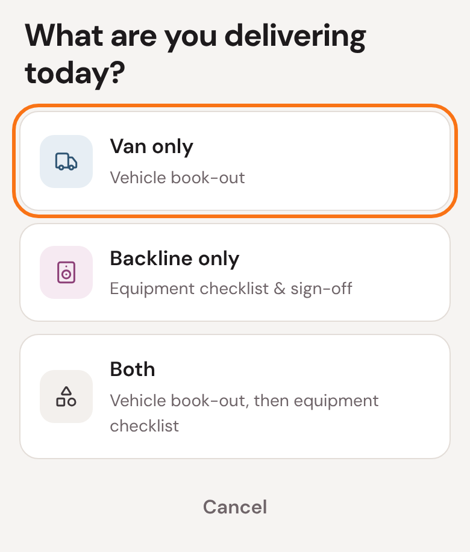
2
Is this the van?
Check the plate on the van in front of you against the screen.
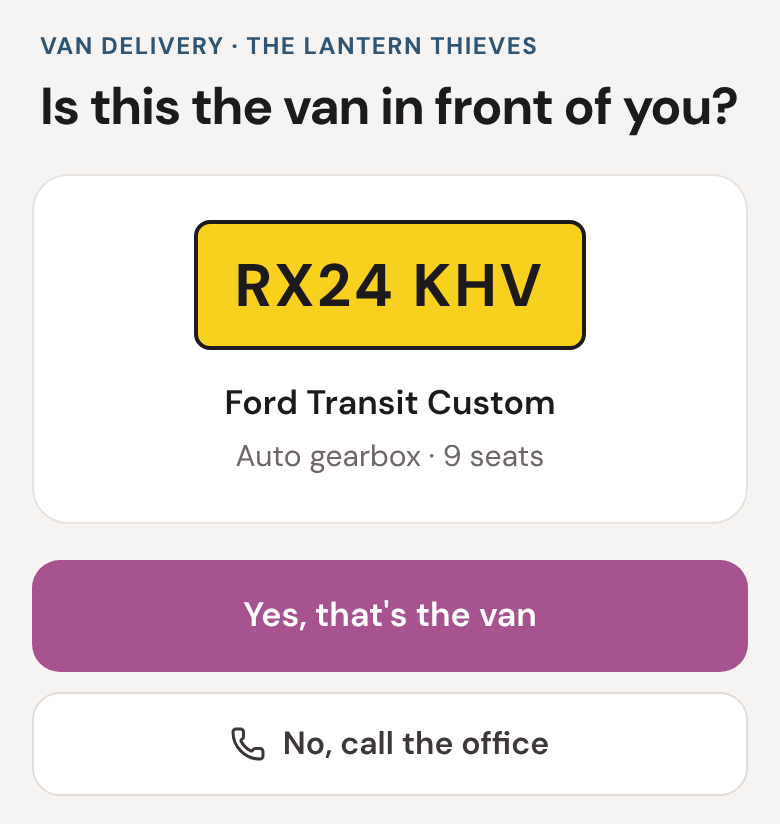
- It matches: tap Yes, that's the van.
- It doesn't: tap No, call the office. Don't hand it over until we've sorted it.
More than one van on the job? It asks which one you're taking first. Tap the one whose plate matches.
3
Fuel and mileage
Type the mileage off the dashboard, and tap the fuel level, in eighths, as on the gauge.
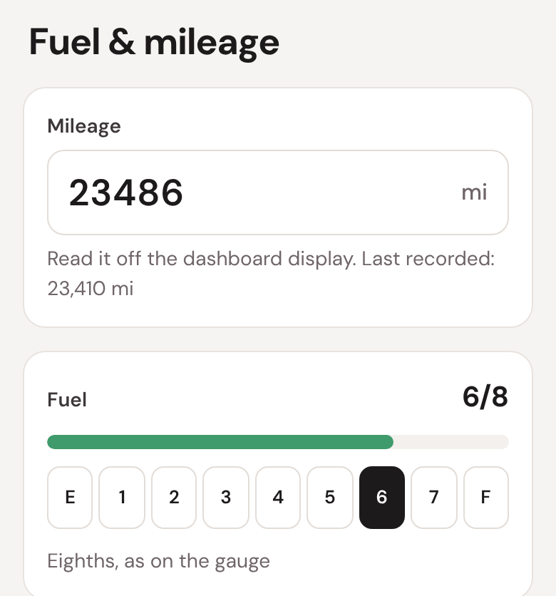
A red line means the mileage is lower than our last reading. Check the dashboard again. If it really says that, call the office: they can correct our record, and then it will save.
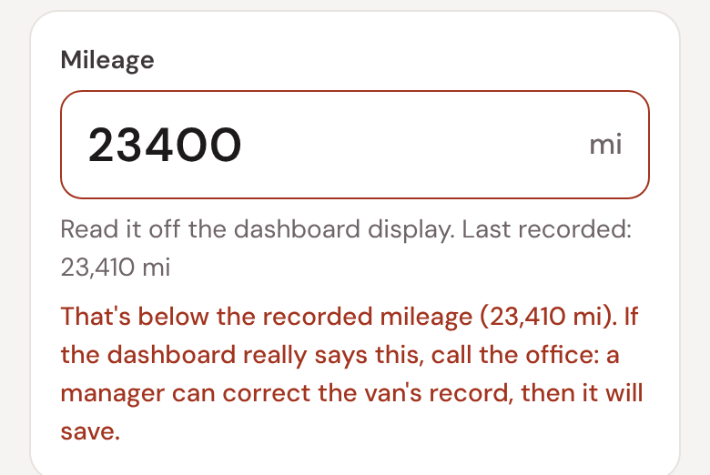
4
The 18 photos
Start at the front and walk clockwise round the van. The card says which photo is next and shows how to frame it. Tap Take photo.
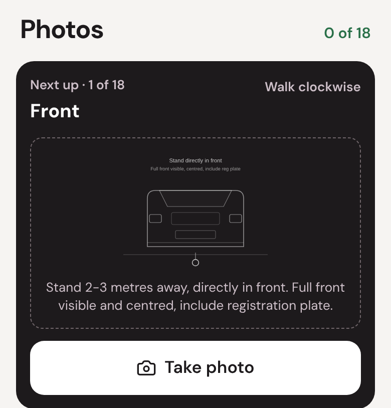
- Get the whole panel in, square on, as the drawing shows.
- Then the inside: the front, the back, the windscreen and the dashboard.
- In the dark, use the flash or park under a light.
When all 18 are done
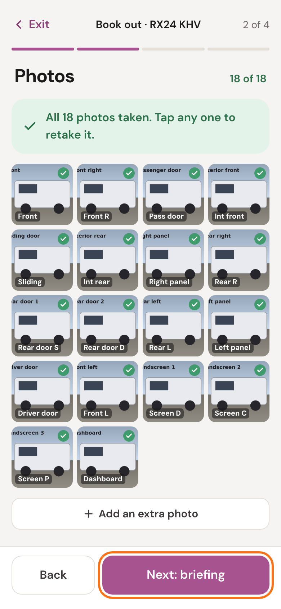
Tap any photo to retake it. Spotted a scratch or a dent? Tap Add an extra photo, take it close up, and say what it shows.
Then tap Next: briefing.
5
Show the driver
Go through each item with the driver, in the van, and tick it as you go.
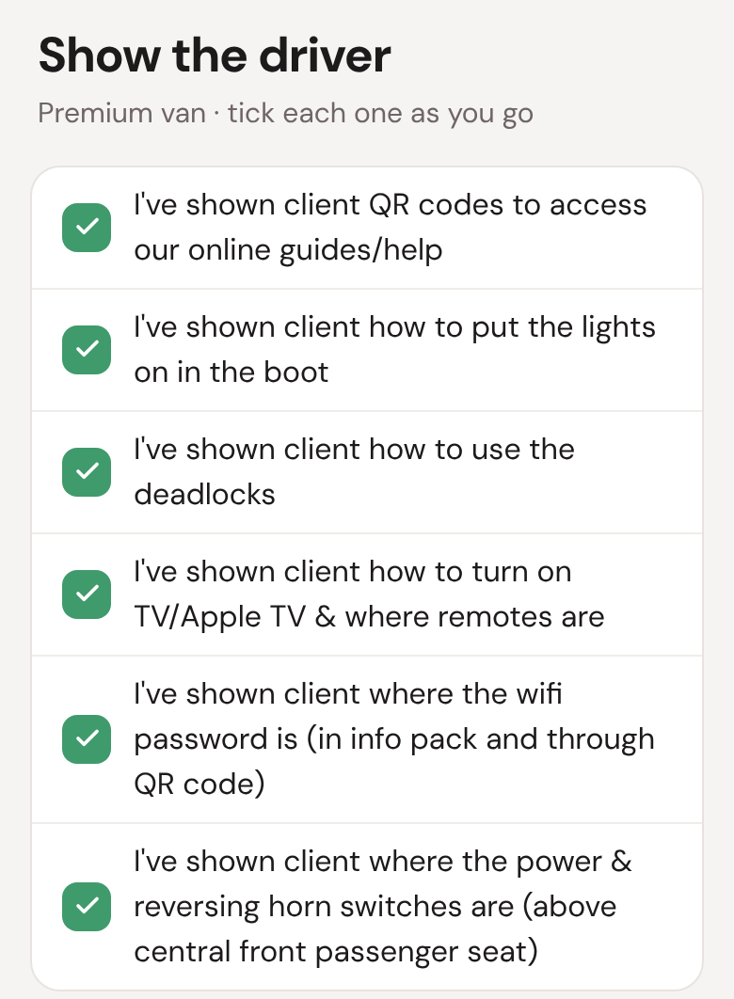
Noticed anything about the van? Write it in Notes underneath.
6
Check and sign
Check the summary, then hand the phone to the driver to sign.
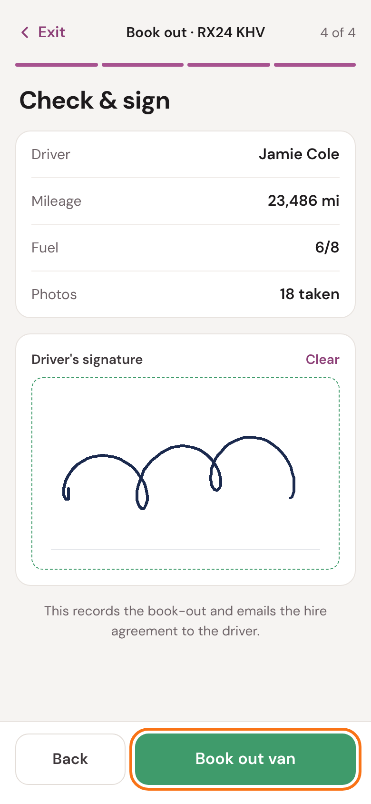
Van going abroad? Tick Printed VE103B handed to the driver once they have it.
Tap Book out van. Stay where you have signal until it's done: it's sending the photos.
7
Done
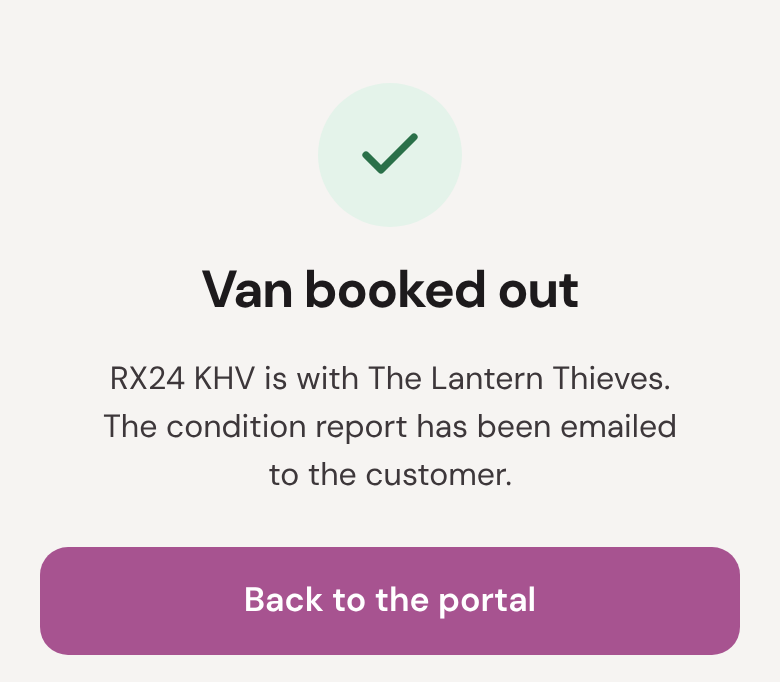
We email the customer the condition report and their hire agreement.
- Van only: it goes back to the portal by itself. Tap All done to finish the job.
- Both: tap Go to the equipment checklist and carry on, as in the backline guide.
See Booked out, with something to check? The van is booked out, but one step didn't finish. Read the list and call the office.
8
If you stop part-way
The book-out saves on your phone as you go, photos and all. If you leave it, or your phone closes the page, open the job and tap Start delivery again.
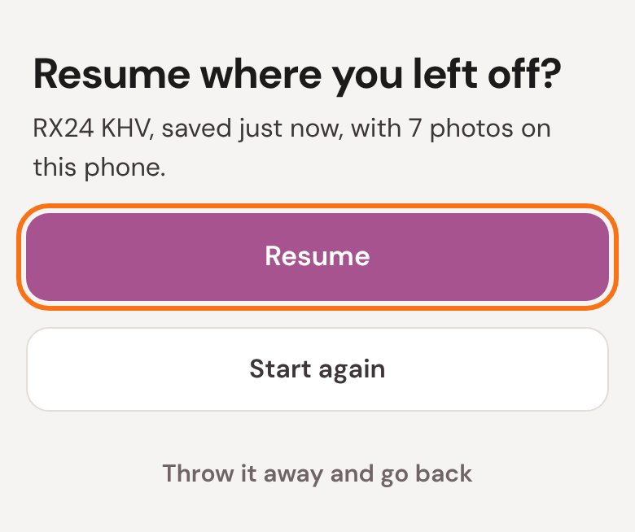
Tap Resume to carry on where you left off. Start again clears it and starts from the beginning.
?
If something's not right
If the van can't be linked, you'll see a screen like this. Read the message, then call the office.
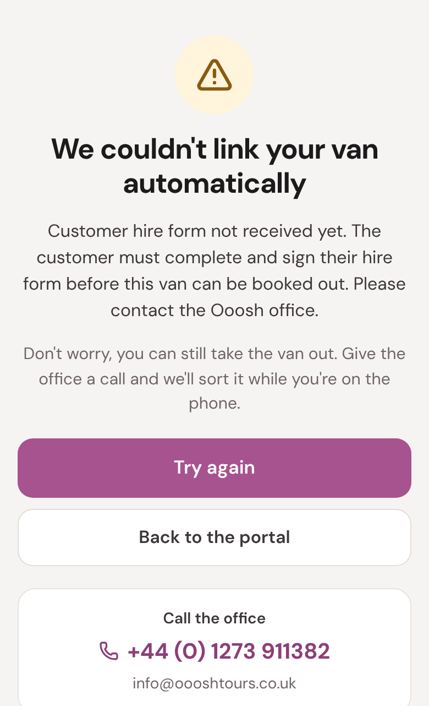
Hire form not received: the customer hasn't finished their hire form. Don't hand over the keys until the office says so.
- It's the wrong van.
- Tap No, call the office. Don't hand it over.
- The mileage won't save.
- It's lower than our last reading. Check the dashboard; if it's right, call the office and they'll correct our record.
- There's no signal.
- Keep going: it saves on your phone. Tap Book out van when you have signal again.
- The driver has gone before signing.
- Call the office. The book-out needs the driver's signature.
- I closed it by mistake.
- Open the job, tap Start delivery, and then Resume.
The office: 01273 911382 · info@oooshtours.co.uk